Jednoho krásného květnového odpoledne roku 2015 mě moje nejskvělejší kámoška Bára K. vzala pozvala na grilovačku. Toho dne se začal vyprávět společný příbeh Cilfa a Leny.
O pět měsíců později (listopad 2015) jsme se k sobě sestěhovali a začli vymejšlet, co dál. Společné vycestování se zdálo být ideální a roční working holiday (WHS) vízum na Nový Zéland ještě ideálnější. Navíc skvělý timing – s hodně štěstím víza obdržena v březnu 2016 a odjezd naplánován na září 2016.
Letět přímo na kiwi ostrovy nám přišlo škoda, a tak jsme si na přestup v Bangkoku vzali dva a půl měsíce s plánem podívat se po jihovýchodní Asii.
A zde začíná náš Ze(v)landí deníček 🙂
P.S. A co že to chcem dělat na Zélandu? Koupit auto (větší s matrací na spaní), během pár měsíců procestovat oba ostrovy a pak si najít práci a zkusit před návratem našetřit pár peněz. Takovej je plán, ale jestli chcete vědět, jak to skutečně všechno dopadne, tak nás tu sledujte 😉
P.P.S. Pokud žijeme moc pomalu a máte snad krátkou chvíli mezi jednotlivými příspěvky, můžete se mrknout na naší minulou cestovatelskou tvorbu:
Po příletu na letiště Schiphol v Amsterdamu jsem se rozhodla, že si musím dát burger u Mekáče. Je to tradice 😀 Když Mara dospával třídenní rozlučku, šla jsem se po něm podívat. Prošla jsem celej prašivej Schiphol tam a zpátky, ale nic jsem nenašla. Zarytě jsem Marovi tvrdila, že musíme vyjít ven, protože v areálu není. Byla jsem k nezastavení a odmítala jsem se smířit s myšlenkou, že jsem ho nedokázala najít. Za východem nám milý pán na informacích sdělil, že McDonald‘s je pouze ve vnitřním areálu a musíme projít přes letištní kontrolu. Již při příchodu ke kontrole na tabuli svítila upomínka, že čekací doba na kontrolu je 25-30 minut. Hned za rohem jsme uviděli nekončící frontu lidí, kteří měli stejný směr jako my (beztak i do toho neobjevitelnýho Mekáče). Mara se mi smál, že mám provinilej výraz, jak když pes kouká na pána poté, co rozkousal celej gauč. Nakonec jsme ho našli ( Mara ho našel) a po téhle hodinové bojovce jsme se vítězoslavně nadlábli. Pokud někdy poletíte přes Schiphol a budete mít pár hodin na přestup, zkuste ho najít. Je to taková bojovka na zkrácení dlouhé chvíle.
Samotný let probíhal nezáživně. Čtení, filmy, spánek, jídlo a věčný přehazování nohou. Holt jsou ty sedačky dělaný spíš na lidi menšího vzrůstu, takže jsem neustále kopala jak do Mary, tak do Brita z druhé strany, který si však nechal tak 13x přinést skleničku červeného vína, takže nevypadal, že by ho moje noční okopávání nějak obtěžovalo.
Ráno v 7 jsme dorazili do Bangkoku, kdy však náš čas byl druhá ráno a byli jsme oba dost mrtví. Pršelo! Po příjezdu na hostel jsme po menším šlofíčku vyrazili do víru velkoměsta. Dneska jsem si velmi rozpomněla na loňskou Indonésii, kdy každej je sice hroznej kámoš, ale stejně se tě snaží trochu ojebat. Za oběd jsme zaplatili na naše cca 300, což je na místní poměry velkej peníz, neboť ceny nebyly nikde napsané a my se na ně naivně nezeptali předem. Místní obchodníček nám naúčtoval tak dvojnásobnou cenu, ale v tu chvíli jsme s tím už nemohli nic udělat. Na křižovatce si nás odchytil místní tuktukář Šai, který nám přislíbil prohlídku města tuktukem (takové menší vozítko pro tři). Bohužel nám nebyl schopen nic říci k památkám, takže když jsem se zeptala, co je to za chrám a jestli by nám mohl říct něco k historii, řekl mi, že je to chrám a ať si jdu dělat fotky. Dovezl nás do cestovky, ať si jdeme koupit nějaké výlety, z čehož určitě dostává nějaký podíl. Dokonce náš dovezl do místního krejčovství, kdy nám vysvětlil, že pokud tam vydržíme 15 minut, dají mu Coca Colu a benzín, tak ať to pro něj uděláme. Vydržela jsem tam přesně 6 minut, kdy nás pan krejčí přesvědčoval o tom, že si Mara musí nechat ušít oblek. Už ho vidím, jak tu ve 30 stupních a dešti běhá v obleku na míru. Od té chvíle byl pro mě tuktukář odepsanej. Místní buddhistické chrámy mě moc nenadchly. Ta červená barva společně s všudypřítomným zlatem je prostě hroznej kýč. Každopádně sochy stojícího Buddhy a šťastného Buddhy byly ohromné a stály za to. Nakonec jsme se šli projít podél řeky, s místníma se schovávali před dešťem a dali si nudle s kuřecím masem, tentokrát již za normální cenu.
První naší položkou tohoto dne byla návštěva místní tržnice, kde jsme měli v plánu nakoupit rozmanité druhy zdejšího ovoce. Leně se totiž minulou noc neudělalo uplně dobře, a tak ovoce měla být „sázka na jistotu“ 🙂
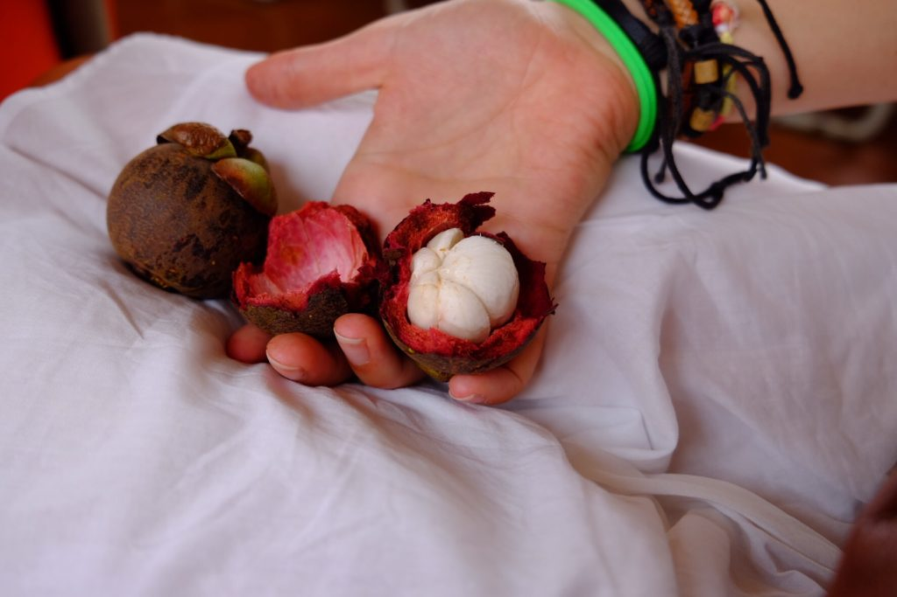Mangosten – lahodný a sladký – doporučujeme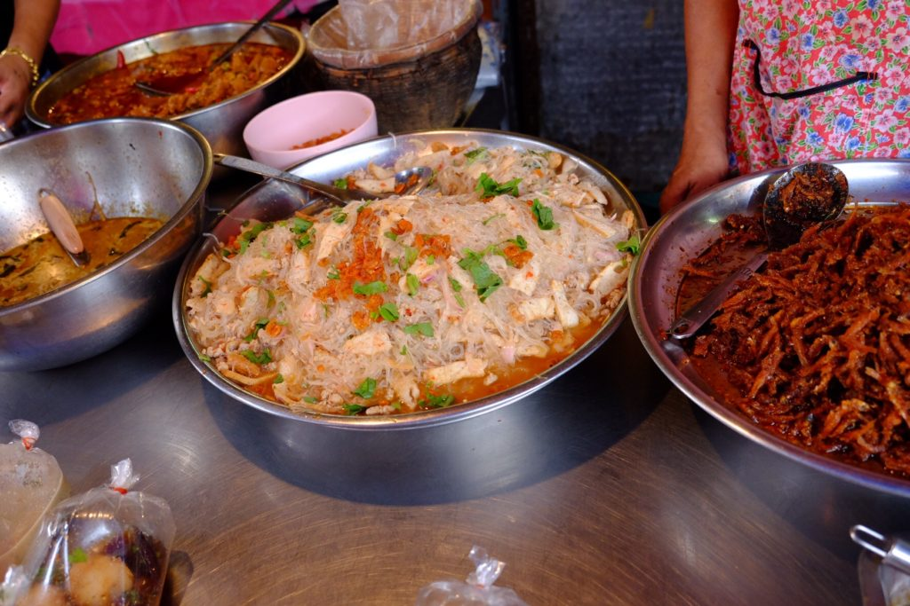Tyhle nudle jsem jedl z igelitového sáčku – připadal jsem si velice thajsky
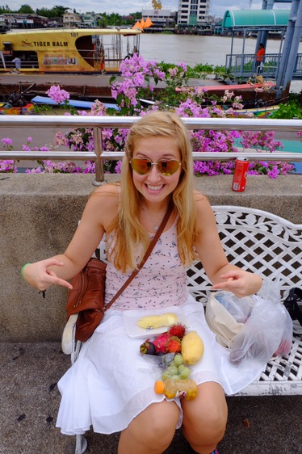Sbírka úlovků z tržíště. Teda kromě Leny, tu už jsem si tam přivedl
U mě vyhrálo mango, Lena si nejvíce pochutnala na smradlavém a mazlavém durianu 🙂
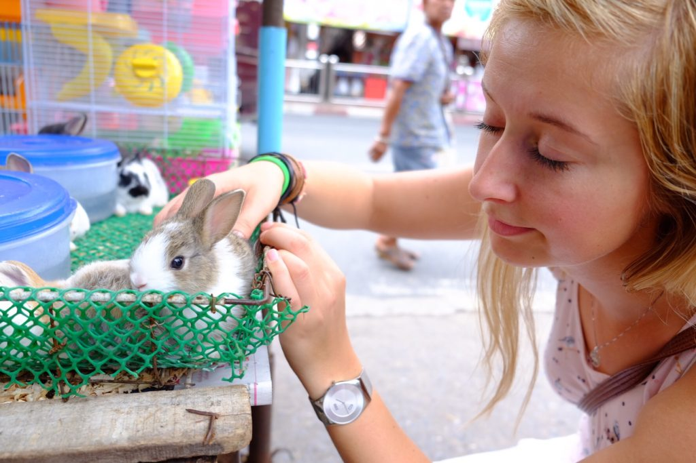Na cestě z tržiště Lena potkala zdroj nekonečné pohody a radosti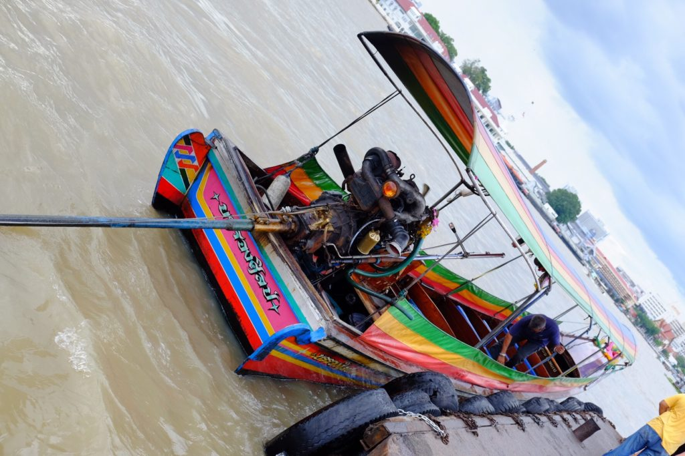Velice thajská dlouho-ocasá loď (long-tail boat). Výhoda pro motor – nepřijde tolik do vlhka. Nevýhoda pro všechny okolo – řve a smrdí
Po návštěvě tržnice nás čekal chrám svítání. Shodli jsme se, že je aspoň trochu zajímavej. Na rozdíl od ostatních uplně stejně vypadajících posvátnejch budov.
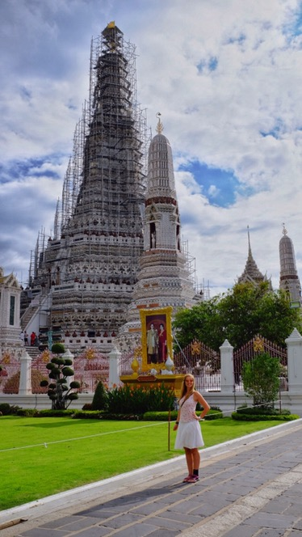Temple of Dawn (Wat Arun)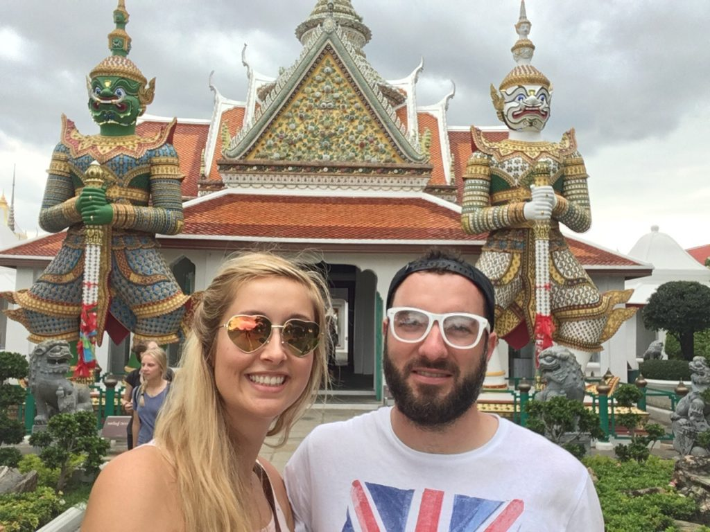Jak se má člověk usmívat na selfietyčku?
Tento chrám získal dalších pár bonusových bodů i za příjemnou udržovanou zahradu a nápadité záchody.
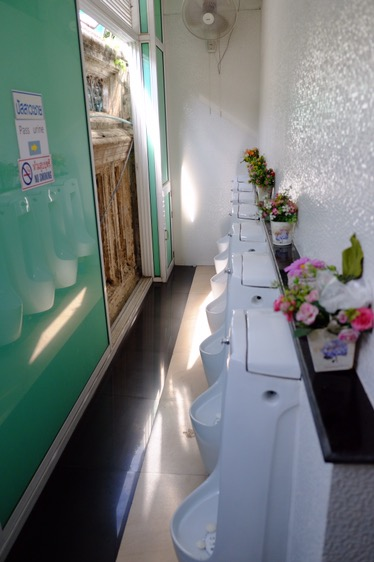Chrámové WC – vkusná dekorace vpravo, kus chrámu vlevo
Park nás zaujal rozmanitou zvířenou. Přeci jenom ty všude přítomné psi a kočky se člověku rychle přejí (haha).
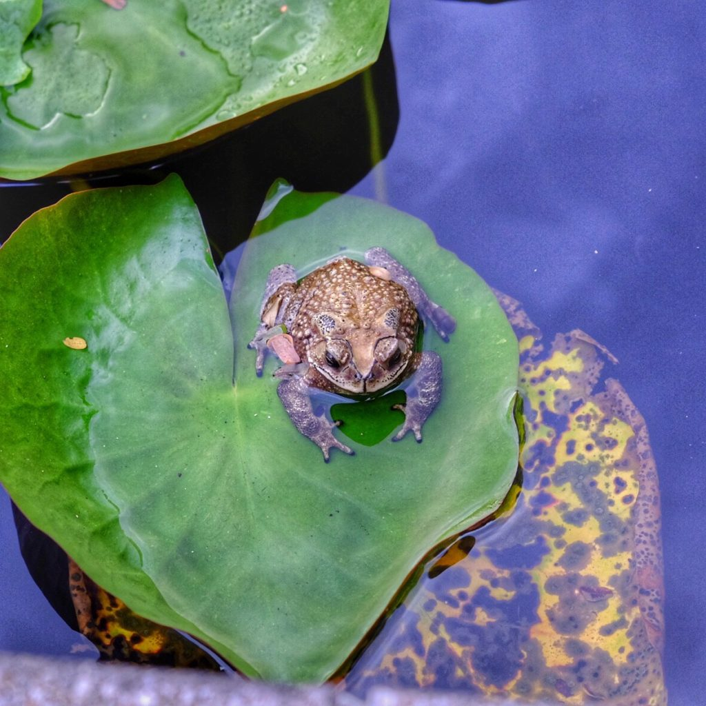Vylezla na list z vody nebo na něj skočila z břehu? Vybrala si schválně list srdíčkovitého tvaru? Jak to, že jí ještě nikdo neulovil(ano, na tržišti byla i sekce s polomrtvými žábami)? A proč je u této fotky tolik otázek?
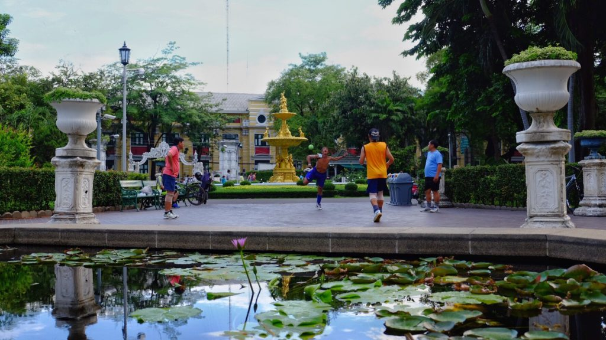Páni v letech hráli něco jako hakys. Akorát míč nebyl textilní. A dost si to dávali. Pán v rudém tričku zrovna umně nakopne míček za zády a navíc ho tím přesně nasměruje na kolegu. Několikrát po sobě.
Dostal jsem od mámy rozkazem, abych fotil víc zvířat a míň jídla. Proto jsem byl moc rád, když se objevil tenle ještěr. Ještě teda mohl trochu líp zapózovat, ale co už.
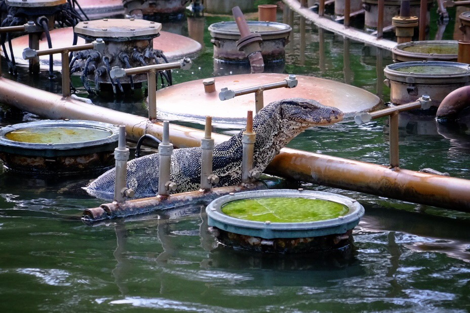Trošku větší ještěrka, než jakou jsme normálně zvyklí potkávat v parcích
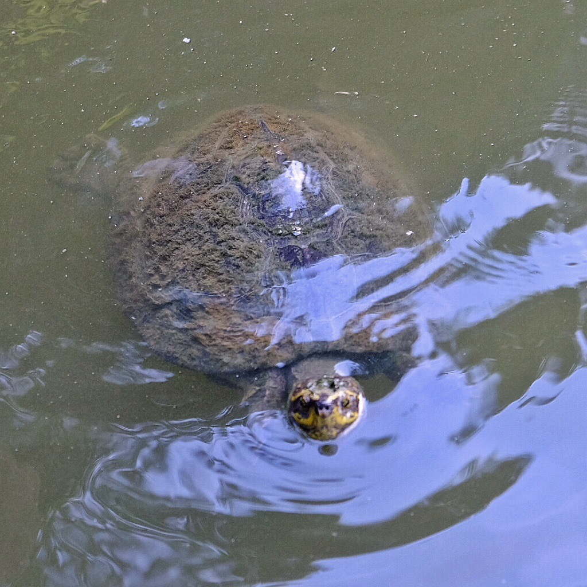
Po parku jsme si to namířili rovnou zpátky na hostel, abychom si trochu odpočali a mohli se vydat brouzdat noční Khao San Road.
Shodli jsme se na společné chuti na curry jídle – nudlí už bylo dost. Po zevrubném porovnání všech jídelních lístků v perimetru jednoho kilometru od Khao San Road jsme se usídlili v The Macaroni Club. Toto místo jsem si zkusil již při mé minulé návštěvě Bangkoku před dvěmi lety porcí zapáleného kuřete. Nutno říct – i curry tady mají výborné.
A teď už šupky hupky do postele. I na zítra máme velké plány. Jestli teda vstanem nějak normálně 🙂
Dnes jsme zamířili na hadí farmu. Jedná se o druhou největší hadí farmu na světě, kde se z jedu vyrábí séra a rozváží do lékáren a nemocnic po celé zemi. V průběhu návštěvy proběhly dvě vystoupení a musím říct, že bez těchto vystoupení by to byla trošku nuda. Při druhém vystoupení nám předváděli různé hady přímo před námi, kdy tzv. vysírači (moje pojmenování) škubali hady za ocas, aby byli dostatečně naštvaní, zvedli se ze země a začali útočit. Polemizovali jsme s Marou o měsíční spotřebě těchto vysíračů. Nakonec nám prozradili, že jejich jedové váčky byly odstraněny, čemuž rozumím, jelikož jak můžete vidět na videu, ne každý vysírač to s hady umí. Nedaleko farmy stál pojízdný bufet (na fotce), kde jedlo několik místních, tak jsme se k nim přidali-bašta! Odpoledne jsme se šli mrknou na Golden Mountain- chrám na jediném kopci široko daleko a konečně jsme viděli město i z výšky.
Jinak dnes jsem vytvořila svoje první video a jsem na něj náležitě pyšná. Mara mi řekl, že je na mě pyšnej jako rodič na retardovaný dítě, který namalovalo svůj první obrázek 😀 no posuďte sami.
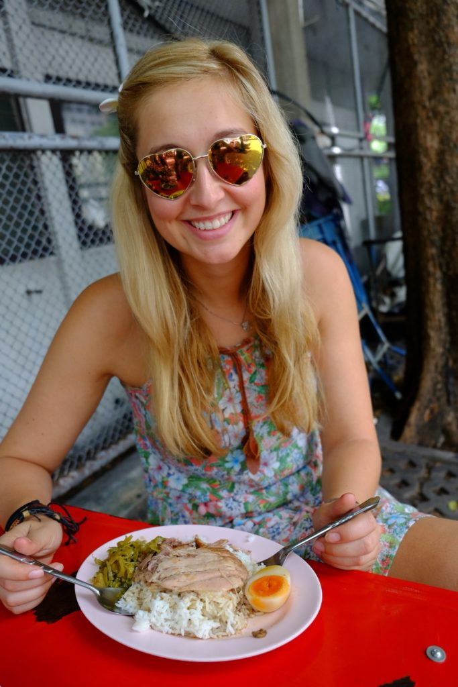Přiznám se, že to zelený se mi nepodařilo identifikovat, ale bylo to dobrý 😀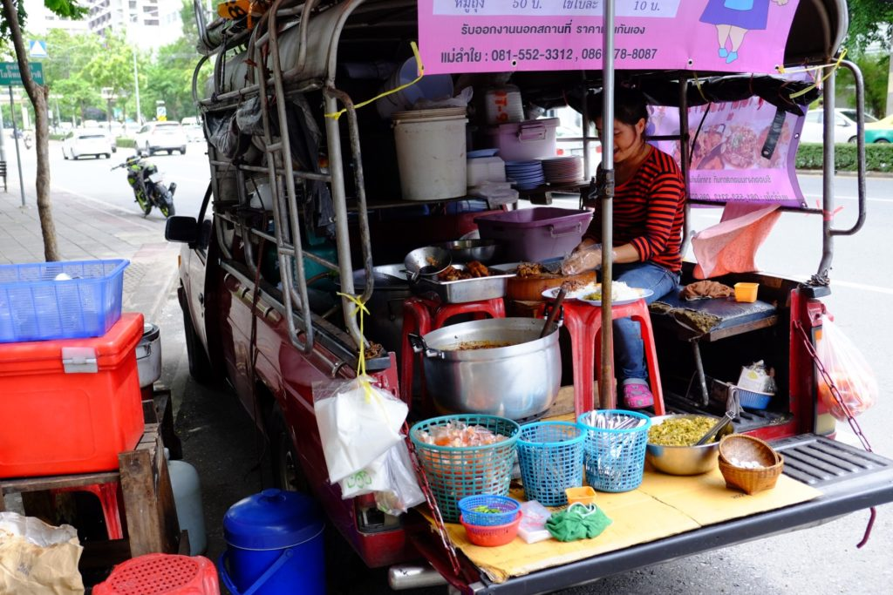Pojízdný bufet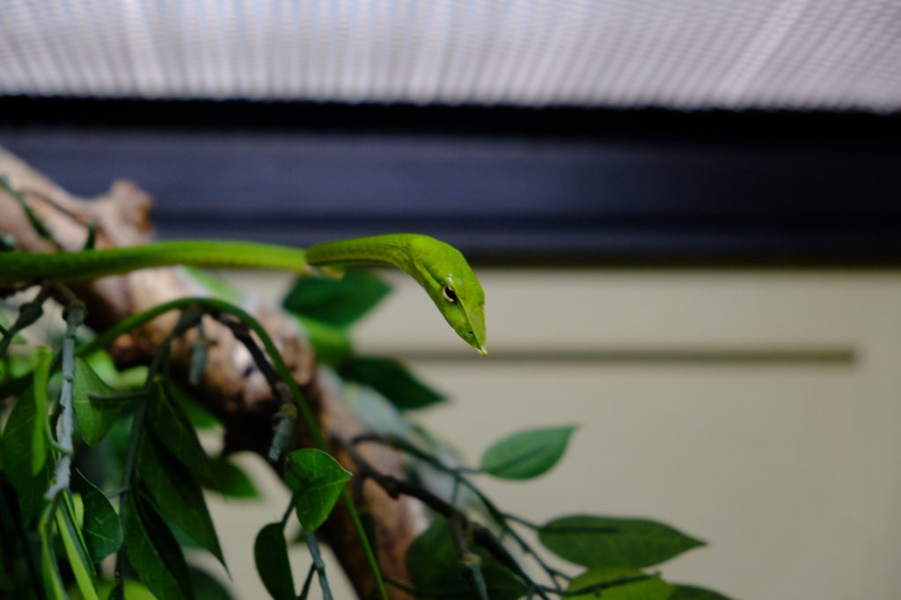Duckface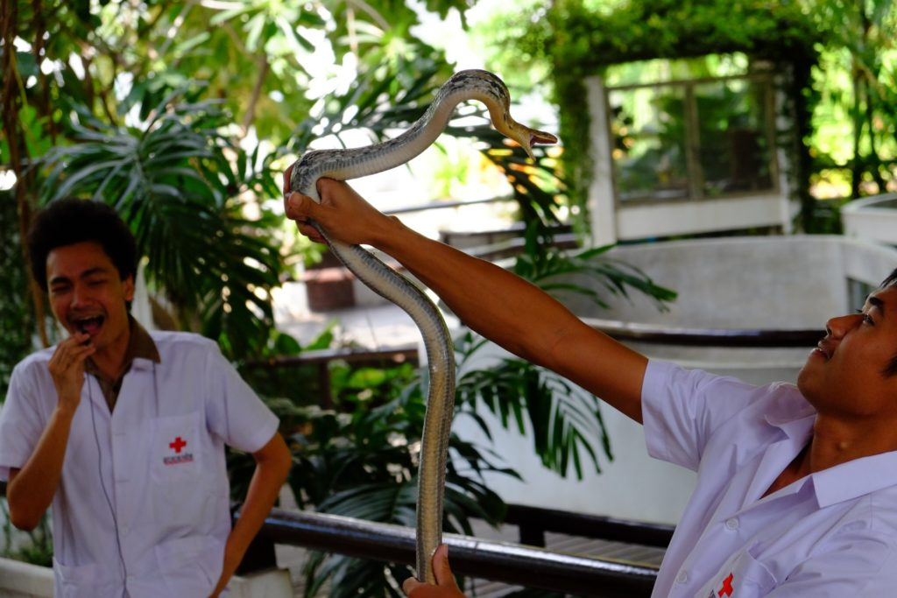vysírač začátečník
Ještě než se pustíme dál, musíme se pochlubit, jak se taky dá večeřet. Abyste si nemysleli, že to všechno je o naleštěnejch fotkach a supr dupr romantice. Přinesl jsem jídlo na véču v igelitových pytlíkach a zhruba takle to dopadne, když na pokoji nemáte ani talíř 🙂
Dneska jsme si potřebovali zabalit, vyčlenit pár věcí, které s námi nebudou pokračovat po Asii, a stihnout bus v 18:00. Všechno se to povedlo….
Že chcete vědět víc? No dobře, tak jedem.
Ráno bylo asi nejhorší se rozhodnout, které všechny věci si chceme uložit na hostelu, abychom se s nimi nemuseli tahat po Asii. Hlavně šlo o teplé oblečení na Zéland a pohorky. Nejdřív jsme mysleli, že si tam schováme i noťasy, ale nakonec jedou s náma. Snad tim snížíme šanci ztráty či zcizení.. Ta taška na nás bude čekat v takovym supr malým kumbálku plným různýho harampádí. Naštěstí zadarmo a samozřejmě bez jakýhokoliv papíru nebo potvrzení. Tak snad budou moje nový pohorky nějakýmu Thajci slušet…
Mniši v akciPo checkoutu jsme se rozběhli pěšky do Chinatown. Nicméně cestou se s náma zakecal jeden místní klučina a poslal nás na Buddha festival. Ten jsme sice nenašli, ale za to jsme objevili těžce organizovanej trh (každej měl při řazený svoje místo) plnej jídla a vůbec všeho možnýho.
Po chvilce se nás naprosto nezištně ujala prodavačka beta rybiček a pokusila se vysvětlit různé zákeřnosti zdejšího jídla. Hlavně teda Lence objednala jídlo bez koriandru, čímž nám oběma v podstatě zachránila celej den 🙂 a já si dal trochu nasládlý rybí curry s nudlema (vlevo)
Spokojeně najezení jsme se vydali směrem Chinatown. Když už máme místní SIM kartu, tak se snažíme pohybovat co nejvíce městskou hromadnou. Google mapy dokážou hodně poradit. Akorát občas ten autobus na daný zastávce jede na druhou stranu. Nebo nejede vůbec. 🙂 a to nás zrovna potkalo, takže jsme si nakonec vzali tuktuk místo chůze, abychom ušetřili trochu času, který by nám před odjezdem autobusu z Bangkoku mohl chybět.
Zdejší Chinatown je vlastně docela nuda, protože se zas tak moc neliší od okolního Bangkoku. V takovym New Yorku je ten kontrast podstatně větší.
Slaďounkej puding nalitej na stickyrice těsně před prodejemPán prodávající pudingJá a Lena v čínském stylu
Zpátky na hostel se nám podařilo autobus ulovit. Jinak když už se to povede, tak je to důvod k oslavě 🙂 jednak nemusíte dejchat všechny ty okolní smrady z vejfuků jako v tuktuku. A taky cestujete víc jako místní. A je to tak desetkrát levnější než tuktuk.
Paní na hostelu nás trochu vypekla. Chtěli jsme se před nocí strávenou v autobuse osprchovat, ale ne. Prej si to majitel nepřeje. Za to já bych přál milýmu majiteli sedět vedle mě za současný nemytý situace dvanáct hodin v busu. No nic, shit happens.
Teď už sedíme v autobusu směr ostrov Koh Phangan. Poštěstilo se nám oběma ulovit vlastní dvojsedadlo, tak snad už nebudem nabírat víc lidí. Odjezd se konal v 6pm, příjezd lodí na ostrov by měl být o 18 hodin později. Přejte nám šťastnou cestu bez zbytečných průjmů 🙂 Jo a bus je ‚foreigners only‘. Nenapadá mě proč, ale aspoň se nemusíme tak mačkat, takže fajn. Jo ještě. Označili si nás nálepkama s cílovou destinací. My máme na tričku PNG. Asi Léňu trochu potrolim a nalepim jí tam jinej ostrov 😀


{kind=link}
{kind=link}
{kind=link}
{kind=link}
{kind=link}
{kind=link}
{kind=link}
{kind=link}
{kind=link}
{kind=link}
{kind=link}
{kind=link}
{kind=link}
{kind=link}
{kind=link}
{kind=link}
{kind=link}
{kind=link}
{kind=link}
{kind=link}
{kind=link}
{kind=link}
{kind=link}
{kind=link}
{kind=link}